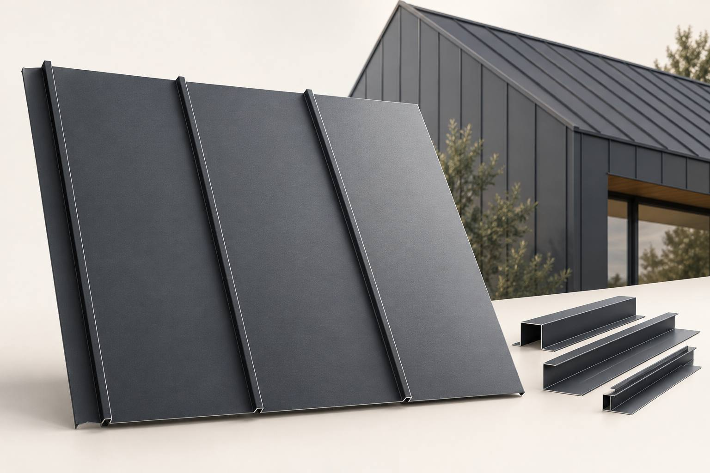
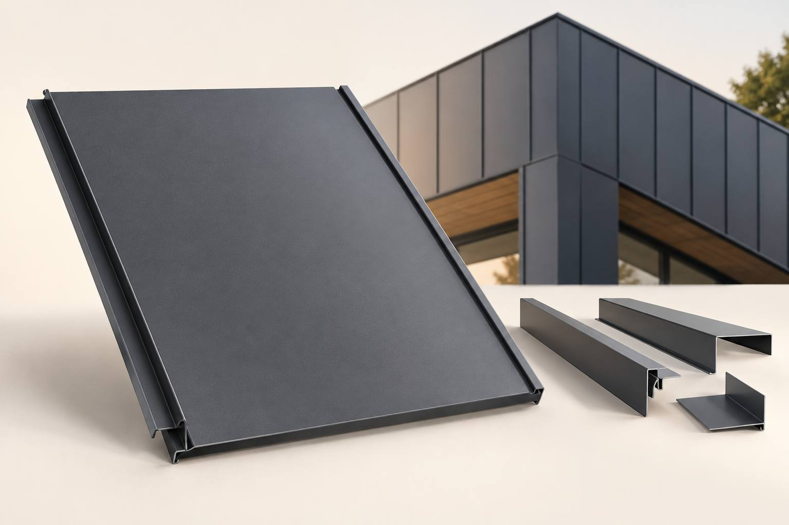
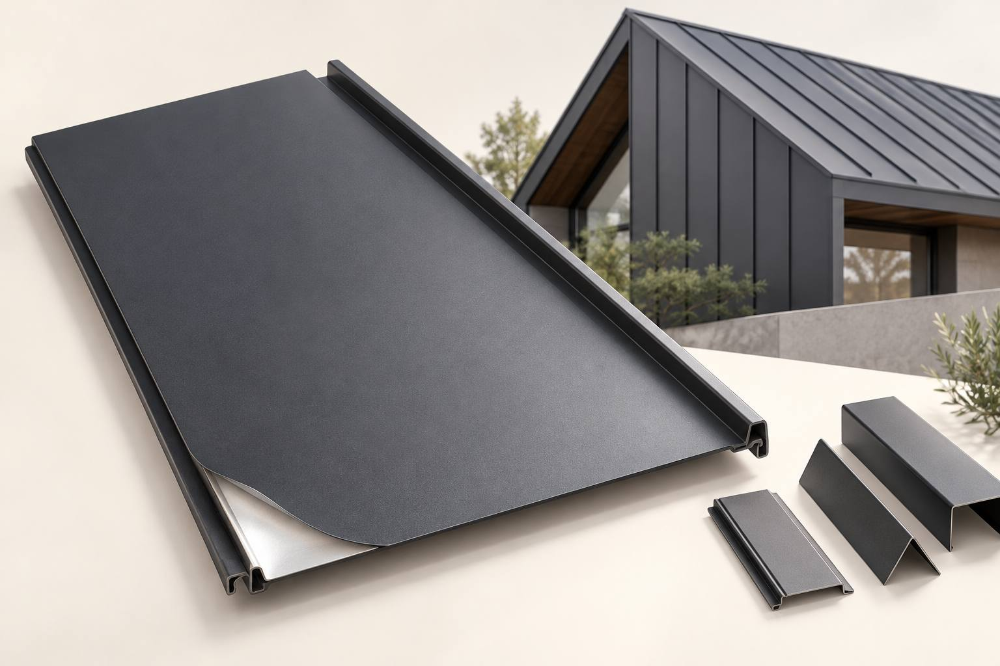

징크 지붕공사
지붕의 경사와 형태, 기존 바탕의 손상 여부를 확인합니다. 처마·용마루·벽체와 만나는 부분, 물받이와 배수 연결 등 마감 부위를 함께 검토하고, 철거 또는 보수가 필요한 범위와 새 지붕의 구성을 상담합니다.
ZINC ROOF & EXTERIOR
건물에 맞는 자재 선택부터
납품과 현장 시공까지, 신명건설이 함께합니다.
징크 공사를 계획하신다면 외관과 색상뿐 아니라 기존 지붕·외벽의 상태, 마감 방향, 접합부와 물이 흐르는 경로를 함께 살펴야 합니다. 신명건설은 평택·수원 등 경기 지역의 신축 및 보수 현장을 상담하고, 현장 조건에 맞는 자재와 시공 범위를 제안합니다.
OUR SERVICE
지붕의 경사와 형태, 기존 바탕의 손상 여부를 확인합니다. 처마·용마루·벽체와 만나는 부분, 물받이와 배수 연결 등 마감 부위를 함께 검토하고, 철거 또는 보수가 필요한 범위와 새 지붕의 구성을 상담합니다.
건물의 높이와 외벽 상태, 창호 및 모서리 주변의 조건을 확인합니다. 판의 배열 방향과 이음선, 주변 마감재와의 조합을 살펴 고객님이 원하시는 외관에 맞는 방향을 제안합니다.
MATERIAL SELECTION
아래 이미지는 직접 제작한 AI 자재 예시이며 실제 제품·시공사진이 아닙니다. 정확한 규격과 색상은 상품 상세 및 샘플로 확인해 주세요.



금속판 뒷면에 열반사층이 더해진 제품입니다. 공기층과 벽체·지붕의 전체 구성을 함께 검토해야 하며, 현장별 단열 성능을 일률적으로 보장하지 않습니다.
열반사 제품 구조·규격 보기 ↗CONSULTATION PROCESS
현장 위치와 건물 용도, 지붕 또는 외벽의 사진을 확인합니다.
마감할 부위, 기존 자재 상태, 원하는 디자인과 작업 여건을 살펴봅니다.
두께·길이·색상과 부속 자재, 납품 및 시공 범위를 구체화합니다.
현장 확인 내용에 따라 공사 일정과 견적을 상담합니다.
BEFORE YOU START
네. 신명건설은 평택·수원을 포함한 경기 지역 현장을 상담합니다. 업체 주소는 평택시이며, 화성의 자체공장과 현장 실무팀을 기반으로 자재 생산·납품과 시공을 진행합니다. 현장 위치와 작업 여건을 알려주시면 일정을 확인해 드립니다.
자재 납품과 현장 시공을 함께 상담할 수 있습니다. 납품만 필요한 경우 상품명, 색상·규격, 수량과 배송지를 알려주세요. 공급 가능 여부와 운반 조건을 확인해 안내합니다.
사진은 초기 상담에 도움이 됩니다. 최종 견적은 실제 면적과 바탕 상태, 철거·보수 범위, 작업 높이와 접근 여건 등을 확인한 뒤 정합니다. 현장 사진과 대략적인 크기를 준비해 주세요.
SHINMYEONG CONSTRUCTION
외벽·지붕의 고민과 원하시는 마감 모습을 알려주세요.
자재 생산부터 납품·직영 시공까지 현장에 필요한 범위를 함께 살펴드립니다.
경기도 평택시 고덕면 도시지원1길 52, 에이스 101 지식산업센터 919호
대표 황건우 · 이메일 sm-1994@naver.com